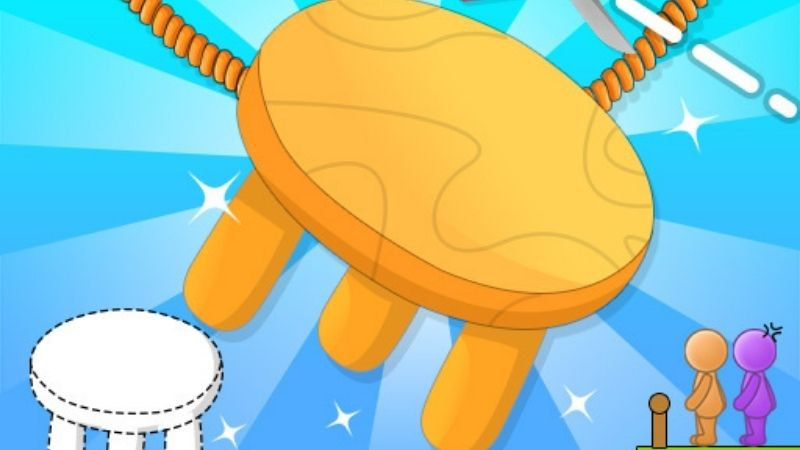

Bulmaca
Seat Puzzle Cut The Rope
Seat Puzzle Cut The Rope, ipleri doğru sırayla keserek bulmacaları çözmeniz gereken eğlenceli bir mantık oyunudur. Her bölümde farklı zorluklarla karşılaşacak ve stratejik düşünme becerilerinizi geliştireceksiniz.
🎮 Hemen Oyna